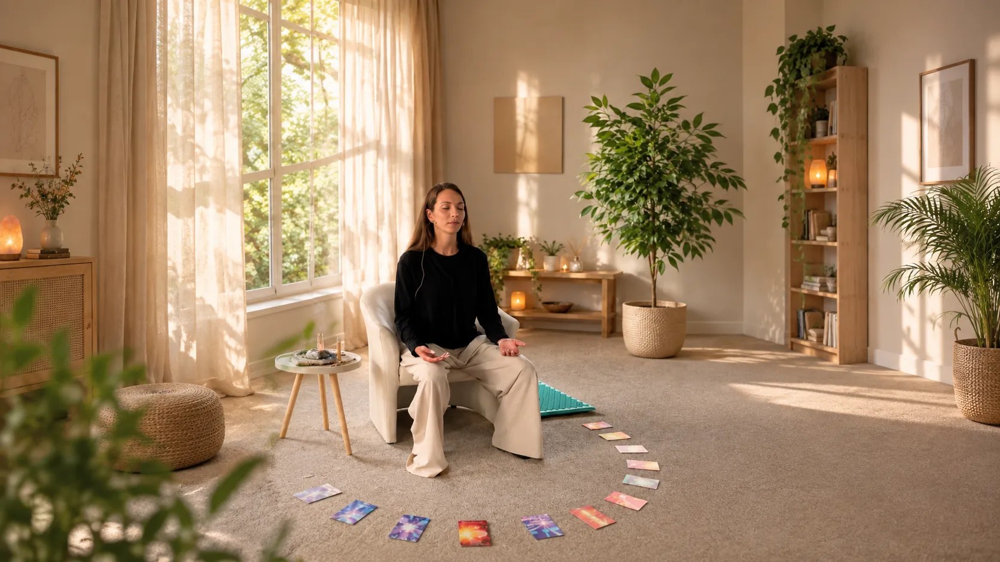
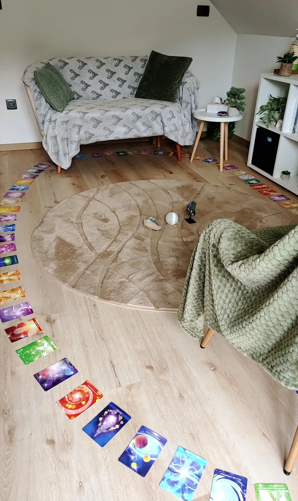

Včasih odgovor že nekje v sebi poznamo, a ga prekrijejo dvomi, strahovi, pričakovanja, mnenja drugih in vsakodnevne misli.
Kanaliziranje je prostor, kjer se za trenutek ustaviš in pogledaš globlje – v svojo dušo, svojo življenjsko pot in vprašanja, ki se ti trenutno odpirajo.
Skozi kanaliziran proces se povezujem z različnimi duhovnimi vodniki, angeli in drugimi varuhi zavesti iz višjih nivojev obstoja ter prenašam informacije, ki se pokažejo za osebo, ki pride na kanaliziranje.
Kanaliziranje ni napovedovanje prihodnosti. Je prostor za jasnost, razumevanje in vpogled v to, kar je zate v tem trenutku pomembno.
Sometimes we already know the answer somewhere inside, but it gets covered by doubts, fears, expectations, other people's opinions and everyday thoughts.
Channeling is a space where you pause for a moment and look deeper — into your soul, your life path and the questions that are opening up for you right now.
Through the channeling process I connect with various spirit guides, angels and other guardians of consciousness from higher levels of existence, and pass on the information that shows itself for the person who comes to the session.
Channeling is not predicting the future. It is a space for clarity, understanding and insight into what matters to you at this moment.
Kanaliziranje je intuitivna duhovna praksa, pri kateri se kot medij povezujem z višjimi nivoji zavesti in prenašam informacije, ki se skozi proces pokažejo za posamezno osebo.
Pri svojem delu dostopam do astralnega in celestialnega nivoja, od koder črpam informacije, povezane z dušo, njeno potjo, izkušnjami in trenutnim življenjskim obdobjem.
Vsako sporočilo je podano na način, ki je osebi razumljiv in blizu.
Channeling is an intuitive spiritual practice in which, as a medium, I connect with higher levels of consciousness and pass on the information that shows itself for each individual person through the process.
In my work I access the astral and celestial levels, from which I draw information connected to the soul, its path, its experiences and your current period of life.
Every message is given in a way that is understandable and close to the person receiving it.

Pri kanaliziranju uporabljam priznano metodo Celestial Inspiration.
Sem licenciran medij Celestial Inspiration in sem zaključila izobraževanje Celestial Inspiration Master. To izobraževanje me je usposobilo za delo varuha in mojstra tehnologije kanaliziranja ter prenosa informacij iz celestialnega nivoja.
Celestial Inspiration temelji na delu z različnimi nivoji zavesti ter povezovanju z duhovnimi vodniki, angeli in drugimi varuhi zavesti.
Ta del mojega dela je pomemben, ker kanaliziranje zame ni zgolj intuitivno ugibanje ali interpretacija.
Je strukturiran način povezovanja in prenosa informacij, ki ga izvajam z veliko mero spoštovanja, odgovornosti in duhovne integritete.
In my channeling I use the recognised Celestial Inspiration method.
I am a licensed Celestial Inspiration medium and have completed the Celestial Inspiration Master training. This training qualified me to work as a guardian and master of the technology of channeling and of transmitting information from the celestial level.
Celestial Inspiration is based on working with different levels of consciousness and connecting with spirit guides, angels and other guardians of consciousness.
This part of my work matters, because for me channeling is not merely intuitive guessing or interpretation.
It is a structured way of connecting and transmitting information, which I practise with a great deal of respect, responsibility and spiritual integrity.
Pri kanaliziranju se lahko povežem z različnimi oblikami zavesti, med drugim s:
Vsaka oseba ima svojo energijo, svojo dušo in svojo pot, zato je tudi vsako kanaliziranje drugačno.
Sporočila niso vnaprej pripravljena.
Pokažejo se skozi proces in se nanašajo na tisto, kar je za posameznico v danem trenutku pomembno.
In channeling I can connect with various forms of consciousness, including:
Every person has their own energy, their own soul and their own path, so every channeling session is different too.
The messages are not prepared in advance.
They show themselves through the process and relate to what matters to that person at that moment.
Pri kanaliziranju lahko dostopam do informacij, povezanih s tvojo dušo, njenimi izkušnjami in tvojo življenjsko potjo.
To lahko vključuje:
Možna so tudi vprašanja o preteklih življenjih.
Kanaliziranje lahko pokaže različne potenciale, možnosti in energije, povezane s tvojo potjo. Vendar ga ne uporabljam kot prerokovanje.
Prihodnost ni fiksna.
Kanaliziranje ti ne pove, kaj se bo zagotovo zgodilo.
Pokaže lahko, kaj je glede na tvoje trenutno stanje in tvojo pot pomembno razumeti zdaj.
In channeling I can access information connected to your soul, its experiences and your life path.
This can include:
Questions about past lives are also possible.
Channeling can show different potentials, possibilities and energies connected to your path. But I don't use it as prophecy.
The future is not fixed.
Channeling doesn't tell you what will definitely happen.
It can show what, given your current state and your path, is important to understand now.
Pri kanaliziranju ne gre za to, da bi dobila vse informacije, ki bi jih bilo mogoče dobiti.
Dobiš tisto, kar si v tem trenutku pripravljena slišati, sprejeti in sprocesirati na nivoju duše.
Sporočila se lahko nanašajo na tvojo trenutno situacijo, odnose, življenjsko pot, družino, notranje procese, pretekle izkušnje ali druge teme, ki so zate pomembne.
Pomembno pa je tudi, česa kanaliziranje ne počne. Vodniki ne bodo predali informacij, ki bi bile namenjene temu, da bi te spravile v strah, paniko ali nelagodje.
Sporočila prihajajo na način, ki je ljubeč, jasen in prilagojen osebi, ki jih prejema.
Channeling isn't about receiving every piece of information that could possibly be received.
You receive what you are ready, at this moment, to hear, accept and process on a soul level.
The messages may relate to your current situation, relationships, life path, family, inner processes, past experiences or other themes that matter to you.
It's also important to know what channeling doesn't do. The guides will not pass on information meant to put you into fear, panic or discomfort.
The messages come in a way that is loving, clear and tailored to the person receiving them.
Na kanaliziranju lahko vprašaš praktično karkoli, kar se nanaša nate, tvojo dušo in tvojo življenjsko pot.
Na primer:
In a channeling session you can ask practically anything that relates to you, your soul and your life path.
For example:
Pri kanaliziranju je zame zelo pomembna svoboda in integriteta vsakega človeka.
Zato lahko prejemam informacije, ki se nanašajo nate in na tvojo pot. Ne morem pa kanalizirati informacij, ki niso namenjene tebi.
Če bi na primer želela izvedeti, kaj določena druga oseba misli, čuti, počne ali kakšne skrivnosti ima, tega ne bom posredovala.
Ne zato, ker vprašanja ne bi bilo mogoče postaviti. Ampak zato, ker tuja notranjost ni tvoja informacija. Takšno delo bi bilo v nasprotju z načeli duhovne etike in integritete človeka.
Kanaliziranje je namenjeno tebi.
Tvoji poti.
Tvojemu razumevanju.
Tvoji rasti.
In channeling, the freedom and integrity of every person is very important to me.
That is why I can receive information that relates to you and your path. But I cannot channel information that isn't meant for you.
If, for example, you wanted to find out what another person thinks, feels or does, or what secrets they have, I won't pass that on.
Not because the question can't be asked. But because someone else's inner world is not your information. Work like that would go against the principles of spiritual ethics and human integrity.
Channeling is meant for you.
Your path.
Your understanding.
Your growth.
S seboj si prineseš napisana vprašanja, ki mi jih ne rabiš predati, ampak jih imaš zase, da se spomniš vseh tem, ki te zanimajo.
Priporočam ti, da jih napišeš oziroma zastaviš čim bolj konkretno, da boš prejela tudi zelo konkretne odgovore.
Za trenutek se umiriva. Svojo pozornost usmeriš vase in na svoja vprašanja, ki jih želiš raziskati.
Vzpostavim povezavo z višjimi nivoji zavesti in začnem sprejemati informacije, ki se pokažejo za tvojo dušo.
Najprej ti predam uvodno sporočilo tvojih osebnih angelov, ki ti osvetli precej velik del tvojih dvomov o sebi in velikokrat odgovori že na nekaj tvojih vprašanj.
Srečanje ni samo enosmerno posredovanje sporočil. Lahko postavljaš vprašanja, podvprašanja, poveš, kaj te je nagovorilo, in dodaš kontekst. Tako lahko določeno temo skupaj pogledava še globlje.
Kot medij potrebujem veliko prostora in časa, da se po seansi prizemljim. Zato se kmalu po kanaliziranju posloviva, ostaneva pa na vezi. V kolikor se ti poraja še kakšna dilema ali nejasnost ali se ti je morda odprl kakšen čustven proces, lahko le-to skomunicirava tudi kasneje.
Ostanem tukaj zate.
Bring your questions written down. You don't need to hand them to me — they're for you, so you remember all the themes you're curious about.
I recommend writing or framing them as concretely as possible, so that you also receive very concrete answers.
We settle for a moment. You turn your attention inwards and to the questions you want to explore.
I establish a connection with higher levels of consciousness and begin receiving the information that shows itself for your soul.
First I pass on an introductory message from your personal angels, which sheds light on a fairly large part of your doubts about yourself and often already answers several of your questions.
The session isn't just a one-way delivery of messages. You can ask questions and follow-up questions, tell me what resonated with you and add context. That way we can look at a particular theme even more deeply together.
As a medium I need a lot of space and time to ground myself after a session. So we say goodbye soon after the channeling, but we stay in touch. If a dilemma or something unclear comes up afterwards, or an emotional process has opened up for you, we can talk it through later too.
I'm here for you.
Celotno predajo sporočil si lahko tudi posnameš kot glasovno sporočilo. Namenjeno je tebi, da ga ponovno poslušaš in morda kasneje ozavestiš še kakšno drugo informacijo, ki ti je bila predana.
Sporočilo je tudi izjemno močna energijska podpora.
You can also record the whole session as a voice message. It's meant for you, so you can listen to it again and perhaps later become aware of other information that was passed on to you.
The message is also a remarkably strong energetic support.
To je pomembno. Ne želim ti povedati, kaj se bo zagotovo zgodilo.
Tvoja prihodnost ni nekaj, kar bi namesto tebe določila druga oseba.
Kanaliziranje je namenjeno jasnosti v tem trenutku. Tisto, kar prejmeš, je povezano s tvojim trenutnim stanjem, tvojo pripravljenostjo in tem, kar je na tvoji poti v danem trenutku pomembno za tvoje najvišje dobro.
Odločitev, kaj boš s prejetim naredila, pa je vedno tvoja.
This matters. I don't want to tell you what will definitely happen.
Your future isn't something another person decides for you.
Channeling is meant for clarity in this moment. What you receive is connected to your current state, your readiness and what, on your path, matters for your highest good at this moment.
But the decision about what you do with what you receive is always yours.
Morda je pravi trenutek, če:
It may be the right moment if:
Tvoj vpogled se začne z enim vprašanjem.
Kaj želiš danes vprašati svojo dušo?
Your insight begins with a single question.
What would you like to ask your soul today?
Po rezervaciji prejmeš vse informacije o prihodu in pripravi.
Rezerviraj kanalizirano sejoNi obvezno, priporočam pa ti, da si vprašanja pripraviš vnaprej. Lahko pa jih napišeš oziroma zastaviš tudi direktno med kanaliziranjem.
It isn't required, but I recommend preparing your questions in advance. You can also write them down or ask them directly during the channeling.
Lahko vprašanje postaviš v povezavi s svojim odnosom do te osebe. Ne posredujem pa informacij, ki posegajo v zasebnost, notranjost ali svobodno voljo druge osebe.
You can ask a question in connection with your relationship to that person. But I don't pass on information that intrudes on another person's privacy, inner world or free will.
Da. Pretekla življenja so lahko ena od tem kanalizirane seje.
Yes. Past lives can be one of the themes of a channeling session.
Kanaliziranja ne izvajam kot napovedovanje prihodnosti. Prejete informacije se nanašajo na tvojo trenutno pot, potenciale in tisto, kar je zate pomembno razumeti v tem trenutku. Pride pa lahko kakšna jasnost tudi za prihodnost.
I don't practise channeling as predicting the future. The information you receive relates to your current path, your potentials and what is important for you to understand at this moment. That said, some clarity about the future can come through as well.
Sporočila so podana na način, ki je čim bolj razumljiv in blizu osebi, ki jih prejema. Vedno pa imaš možnost postaviti podvprašanja med samim kanaliziranjem.
The messages are given in a way that is as understandable and close as possible to the person receiving them. And you can always ask follow-up questions during the channeling itself.
Sporočila iz celestialnega nivoja so vedno ljubeča in njihov namen je vedno predaja jasnosti v tvoje najvišje dobro. Večinoma ljudje ob sporočilih prepoznajo sami sebe in to lahko sproži čustva ganjenosti oziroma čustva, ki so jih potlačili globoko vase (lahko pride na primer občutek žalosti ob določeni prepoznavi). Te pa sporočila vodnikov vedno pomirijo in usmerijo v razrešitev določenega problema. Večina ljudi opisuje občutek olajšanosti po kanaliziranju.
Messages from the celestial level are always loving, and their purpose is always to bring clarity for your highest good. Most people recognise themselves in the messages, and this can stir feelings of being deeply moved, or emotions they had pushed down deep inside (for example, a feeling of sadness at a certain recognition). But the guides' messages always calm you and point you towards resolving the issue. Most people describe a feeling of relief after channeling.
Morda je nekaj, kar si moraš dovoliti slišati. Prisluhni.